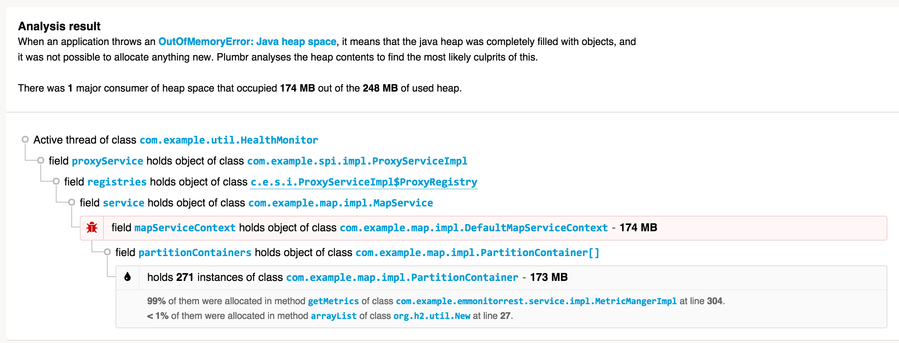

转载自: https://blog.csdn.net/renfufei/article/details/77585294
Java运行时环境内置了 垃圾收集(GC) 模块. 上一代的很多编程语言中并没有自动内存回收机制, 需要程序员手工编写代码来进行内存分配和释放, 以重复利用堆内存。
在Java程序中, 只需要关心内存分配就行。如果某块内存不再使用, 垃圾收集(Garbage Collection) 模块会自动执行清理。GC的详细原理请参考 GC性能优化 系列文章, 一般来说, JVM内置的垃圾收集算法就能够应对绝大多数的业务场景。
java.lang.OutOfMemoryError: GC overhead limit exceeded 这种情况发生的原因是, 程序基本上耗尽了所有的可用内存, GC也清理不了。
原因分析
JVM抛出 java.lang.OutOfMemoryError: GC overhead limit exceeded 错误就是发出了这样的信号: 执行垃圾收集的时间比例太大, 有效的运算量太小. 默认情况下, 如果GC花费的时间超过 98%, 并且GC回收的内存少于 2%, JVM就会抛出这个错误。

注意, java.lang.OutOfMemoryError: GC overhead limit exceeded 错误只在连续多次 GC 都只回收了不到2%的极端情况下才会抛出。假如不抛出 GC overhead limit 错误会发生什么情况呢? 那就是GC清理的这么点内存很快会再次填满, 迫使GC再次执行. 这样就形成恶性循环, CPU使用率一直是100%, 而GC却没有任何成果. 系统用户就会看到系统卡死 - 以前只需要几毫秒的操作, 现在需要好几分钟才能完成。
这也是一个很好的 快速失败原则 的案例。
示例
以下代码在无限循环中往 Map 里添加数据。 这会导致 “GC overhead limit exceeded” 错误:
1 | package com.cncounter.rtime; |
配置JVM参数: -Xmx12m。执行时产生的错误信息如下所示:
1 | Exception in thread "main" java.lang.OutOfMemoryError: GC overhead limit exceeded |
你碰到的错误信息不一定就是这个。确实, 我们执行的JVM参数为:
1 | java -Xmx12m -XX:+UseParallelGC TestWrapper |
很快就看到了 java.lang.OutOfMemoryError: GC overhead limit exceeded 错误提示消息。但实际上这个示例是有些坑的. 因为配置不同的堆内存大小, 选用不同的GC算法, 产生的错误信息也不相同。例如,当Java堆内存设置为10M时:
1 | java -Xmx10m -XX:+UseParallelGC TestWrapper |
DEBUG模式下错误信息如下所示:
1 | Exception in thread "main" java.lang.OutOfMemoryError: Java heap space |
读者应该试着修改参数, 执行看看具体。错误提示以及堆栈信息可能不太一样。
这里在 Map 进行 rehash 时抛出了 java.lang.OutOfMemoryError: Java heap space 错误消息. 如果使用其他 垃圾收集算法, 比如 -XX:+UseConcMarkSweepGC, 或者 -XX:+UseG1GC, 错误将被默认的 exception handler 所捕获, 但是没有 stacktrace 信息, 因为在创建 Exception 时 没办法填充stacktrace信息。
例如配置:
1 | -Xmx12m -XX:+UseG1GC |
在Win7x64, Java8环境运行, 产生的错误信息为:
1 | Exception: java.lang.OutOfMemoryError thrown from the UncaughtExceptionHandler in thread "main" |
建议读者修改内存配置, 以及垃圾收集算法进行测试。
这些真实的案例表明, 在资源受限的情况下, 无法准确预测程序会死于哪种具体的原因。所以在这类错误面前, 不能绑死某种特定的错误处理顺序。
解决方案
有一种应付了事的解决方案, 就是不想抛出 “java.lang.OutOfMemoryError: GC overhead limit exceeded” 错误信息, 则添加下面启动参数:
1 | // 不推荐 |
我们强烈建议不要指定该选项: 因为这不能真正地解决问题，只能推迟一点 out of memory 错误发生的时间，到最后还得进行其他处理。指定这个选项, 会将原来的 java.lang.OutOfMemoryError: GC overhead limit exceeded 错误掩盖，变成更常见的 java.lang.OutOfMemoryError: Java heap space 错误消息。
需要注意: 有时候触发 GC overhead limit 错误的原因, 是因为分配给JVM的堆内存不足。这种情况下只需要增加堆内存大小即可。
在大多数情况下, 增加堆内存并不能解决问题。例如程序中存在内存泄漏, 增加堆内存只能推迟产生 java.lang.OutOfMemoryError: Java heap space 错误的时间。
当然, 增大堆内存, 还有可能会增加 GC pauses 的时间, 从而影响程序的 吞吐量或延迟。
如果想从根本上解决问题, 则需要排查内存分配相关的代码. 简单来说, 需要回答以下问题:
- 哪类对象占用了最多内存？
- 这些对象是在哪部分代码中分配的。
要搞清这一点, 可能需要好几天时间。下面是大致的流程:
- 获得在生产服务器上执行堆转储(heap dump)的权限。“转储”(Dump)是堆内存的快照, 可用于后续的内存分析. 这些快照中可能含有机密信息, 例如密码、信用卡账号等, 所以有时候, 由于企业的安全限制, 要获得生产环境的堆转储并不容易。
- 在适当的时间执行堆转储。一般来说,内存分析需要比对多个堆转储文件, 假如获取的时机不对, 那就可能是一个“废”的快照. 另外, 每执行一次堆转储, 就会对JVM进行一次“冻结”, 所以生产环境中,不能执行太多的Dump操作,否则系统缓慢或者卡死,你的麻烦就大了。
- 用另一台机器来加载Dump文件。如果出问题的JVM内存是8GB, 那么分析 Heap Dump 的机器内存一般需要大于 8GB. 然后打开转储分析软件(我们推荐Eclipse MAT , 当然你也可以使用其他工具)。
- 检测快照中占用内存最大的 GC roots。详情请参考: Solving OutOfMemoryError (part 6) – Dump is not a waste。 这对新手来说可能有点困难, 但这也会加深你对堆内存结构以及 navigation 机制的理解。
- 接下来, 找出可能会分配大量对象的代码. 如果对整个系统非常熟悉, 可能很快就能定位问题。运气不好的话，就只有加班加点来进行排查了。
打个广告, 我们推荐 Plumbr, the only Java monitoring solution with automatic root cause detection。 Plumbr 能捕获所有的 java.lang.OutOfMemoryError , 并找出其他的性能问题, 例如最消耗内存的数据结构等等。
Plumbr 在后台负责收集数据 —— 包括堆内存使用情况(只统计对象分布图, 不涉及实际数据),以及在堆转储中不容易发现的各种问题。 如果发生 java.lang.OutOfMemoryError , 还能在不停机的情况下, 做必要的数据处理. 下面是Plumbr 对一个 java.lang.OutOfMemoryError 的提醒:

强大吧, 不需要其他工具和分析, 就能直接看到:
- 哪类对象占用了最多的内存(此处是 271 个 com.example.map.impl.PartitionContainer 实例, 消耗了 173MB 内存, 而堆内存只有 248MB)
- 这些对象在何处创建(大部分是在 MetricManagerImpl 类中,第304行处)
- 当前是谁在引用这些对象(从 GC root 开始的完整引用链)
得知这些信息, 就可以定位到问题的根源, 例如是当地精简数据结构/模型, 只占用必要的内存即可。
当然, 根据内存分析的结果, 以及Plumbr生成的报告, 如果发现对象占用的内存很合理, 也不需要修改源代码的话, 那就增大堆内存吧。在这种情况下,修改JVM启动参数, (按比例)增加下面的值:
1 | java -Xmx1024m com.yourcompany.YourClass` |
这里配置了最大堆内存为 1GB。请根据实际情况修改这个值. 如果 JVM 还是会抛出 OutOfMemoryError, 那么你可能还需要查询手册, 或者借助工具再次进行分析和诊断。